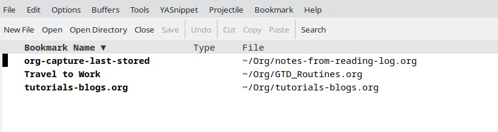

Emacs Bookmarks - Part 1#
Introduction#
During work with Emacs, you may want to bookmark some files or positions in the file to quickly jump to them later.
This post will show you how to work with bookmarks in Emacs.
This article is about vanilla Emacs and does not cover any specific packages that may provide additional functionality.
Quick shortcuts#
It is worth to learn more about bookmarks in Emacs, however you can start using them right away.
Following are some quick shortcuts to work with bookmarks in Emacs:
C-x r m- Set a bookmark at the current locationC-x r l- List all bookmarksC-x r b- Jump to a bookmarkM-x bookmark-delete- Delete a bookmark
Create a bookmark#
One of the most common operations is to create a bookmark at the current location.
This can be done by pressing C-x r m key sequence and adding a name for the bookmark.
Please try to use some names which quickly allow you to identify the bookmark later.
List all bookmarks#
To list all bookmarks, you can use the C-x r l key sequence.
Above sequence will open a new buffer with a list of all bookmarks.
Following screenshot shows the list of bookmarks, where you can see the name of the bookmark and the file where it was created:
{kind=link}
Jump to a bookmark#
To jump to a bookmark, you can use the C-x r b key sequence.
After pressing the key sequence, you will be prompted to enter the name of the bookmark you want to jump to.
This is helpful when you known the name of the bookmark and want to quickly jump to it.
Also this is working with known prefix - you can type the first letters of the bookmark name and press TAB to complete the name.
Delete a bookmark#
Looks like there is no built-in shortcut to delete a bookmark.
You can use the M-x bookmark-delete command to delete a bookmark.
After running the command, you will be prompted to enter the name of the bookmark you want to delete.
Summary#
This post showed you how to work with bookmarks in Emacs.
Working with booksmarks can speed up your work and allow you to quickly jump between different locations in the files.
Resources#
Following resources can be helpful to learn more about bookmarks in Emacs:
Following resources points to some alterantive packages that can be used to manage bookmarks in Emacs: